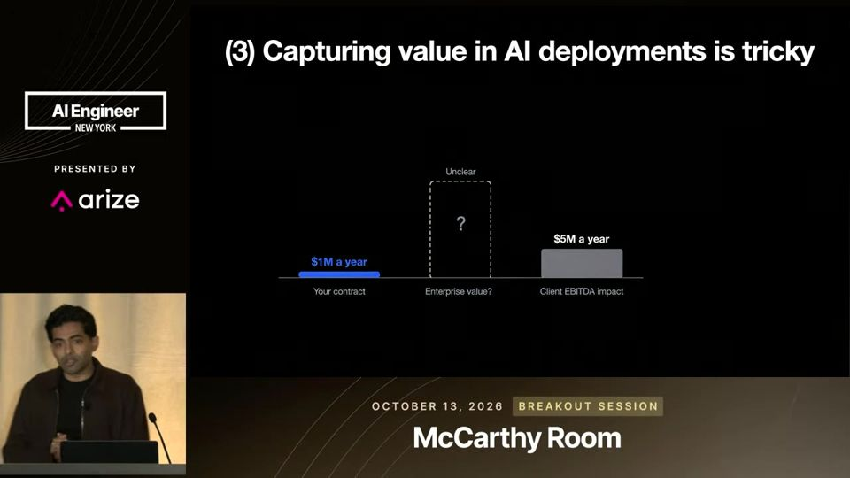
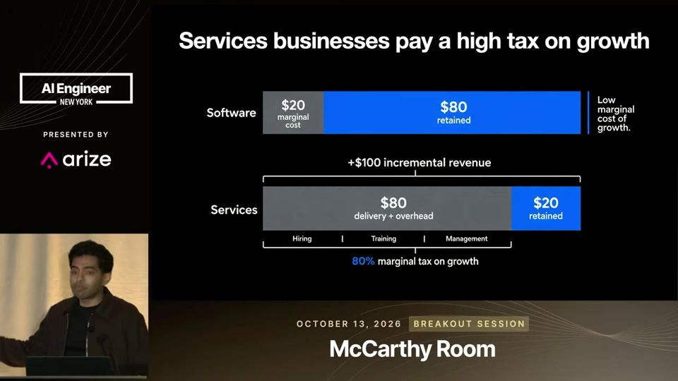

Buy, Build, Deploy: Using M&A to Drive AI Transformation
Vender agente de IA por fora esbarra em muros. Comprar o negócio de serviços e transformá-lo por dentro captura o valor que o fornecedor perde.
Em 3 frases
Prathik Naidu, da Long Lake, diz que o difícil de levar IA para empresas está longe do modelo: está na organização complexa, no conhecimento tácito das pessoas e na dificuldade do fornecedor de capturar o valor que gera.
A Long Lake compra empresas de serviços (arquitetura, RH, serviços residenciais) e implanta IA por dentro. Assim ela tem acesso às pessoas, aos dados, à confiança de marca e ao resultado financeiro.
A tese é que a IA dá a serviços uma economia parecida com a de software, porque a mão de obra deixa de crescer na mesma proporção da receita. O caminho passa por uma curva J: investe primeiro, ganha capacidade depois e só então vê impacto no lucro.
Antes de ler
- Outside-in vs inside-out de fora para dentro versus de dentro para fora
- EBITDA lucro operacional antes de juros, impostos e depreciação
- Múltiplo de valuation quantas vezes o lucro vale a empresa
- Operating leverage alavancagem operacional
- Holding company empresa controladora que compra e opera outras empresas
- Data flywheel ciclo em que o uso gera dados que melhoram o produto
Implantar IA por fora esbarra em três muros
O organograma no papel esconde uma rede de veteranos que decidem na prática. O fornecedor também só enxerga sistemas como CRM e documentos, enquanto o negócio roda em julgamento humano, exceções e perguntas rápidas ao especialista. Por fim, o valor aparece no resultado do cliente e escapa do fornecedor.
02:04 O organograma real é uma teia de veteranos, não uma árvore limpa.
O fornecedor faz o trabalho e o cliente fica com o valor
O exemplo do palestrante: um contrato de US$ 1 milhão por ano gera cerca de US$ 5 milhões de EBITDA (lucro operacional antes de juros, impostos e depreciação) para o cliente. Com um múltiplo conservador de 10x, isso vira US$ 50 milhões em valor da empresa. Quem comprou o negócio fica com esse ganho. Quem vendeu a ferramenta, não.

Serviços pagam um imposto de 80% sobre o crescimento
Em software, cada US$ 100 de receita nova deixam cerca de US$ 80 de margem. Em serviços, o custo de entrega e overhead come cerca de US$ 80 e sobram uns US$ 20. A tese é que a IA quebra essa ligação entre receita e mão de obra e aproxima a economia de serviços da de software.

Mais 2 ideias deste talk
Como escolher o que comprar
O filtro tem três perguntas. Os clientes confiam na empresa para entregar um resultado de ponta a ponta? Existe julgamento humano no serviço? Há regras que definem quem responde pelo resultado? O exemplo é resolver um vazamento urgente, não só redigir um e-mail. A empresa diz ver cerca de 5.000 negócios por ano e comprar muito poucos.
13:53 Critérios para escolher empresas onde a IA ajuda, mas o humano segue responsável.
A curva J da transformação
Primeiro vem o investimento: plataforma, tecnologia e muito tempo da equipe. Depois sobem a adoção e a capacidade, com as mesmas entregas em menos horas. Só depois que essa capacidade vira crescimento e qualidade de serviço aparece o impacto no lucro, com mais receita por funcionário.
15:26 O retorno só chega depois de um vale de investimento.
É pitch de captação e de recrutamento da Long Lake, e o palestrante tem interesse direto na tese. Não há dado de resultado: a seção "Results" fala de "faster time to P&L impact" sem mostrar receita por funcionário, margem ou prazo. O exemplo de US$ 5 milhões de EBITDA é hipotético. O US$ 80 contra US$ 20 de margem aparece sem fonte. Também faltam riscos como integração pós-compra, resistência de funcionários, dívida e a chance de os modelos ficarem baratos e o ganho de eficiência ir para o preço, não para o lucro.
O que fazer com isso
- Se você vende ou implanta IA numa empresa, pergunte antes quem vai medir o ganho e quem fica com ele, e escreva isso no contrato.
- Mapeie com quem de fato decide e quem sabe as exceções no processo que você quer automatizar. Converse com esses veteranos antes de desenhar o agente.
- Para avaliar um processo de serviços, calcule quanto da receita nova vira custo de mão de obra. Onde esse número é alto, a IA tende a render mais.
- Ao planejar uma implantação, reserve tempo e orçamento para o vale inicial da curva J e defina uma métrica de impacto no negócio, não só horas economizadas.